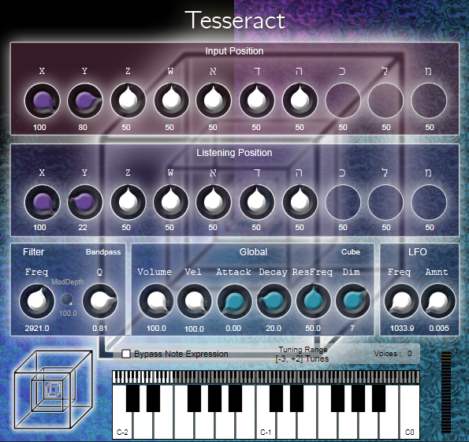

Tesseract is a VST audio plugin that simulates multidimensional resonators. While a 1-dimensional string only oscillates at multiples of a base frequency, membranes (or rather cubes) in higher dimensions have far more eigen frequencies which are in general no integer multiples of the lowest frequency.
